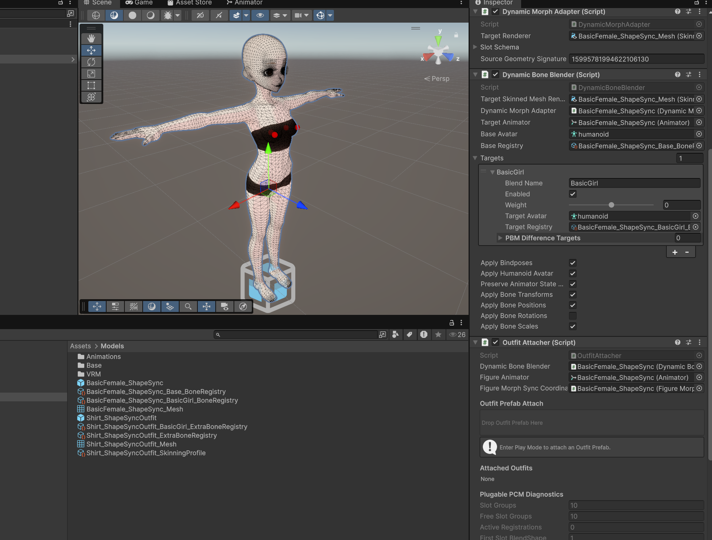
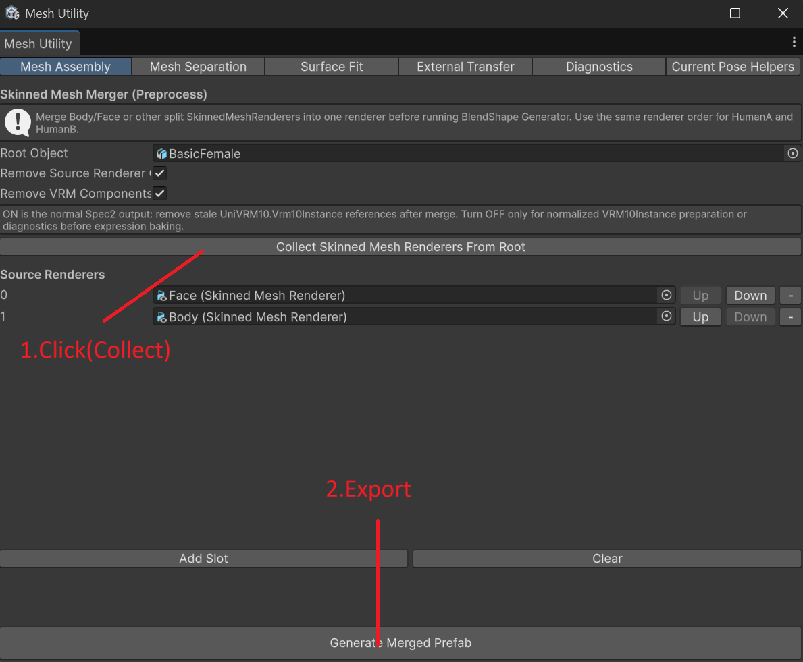
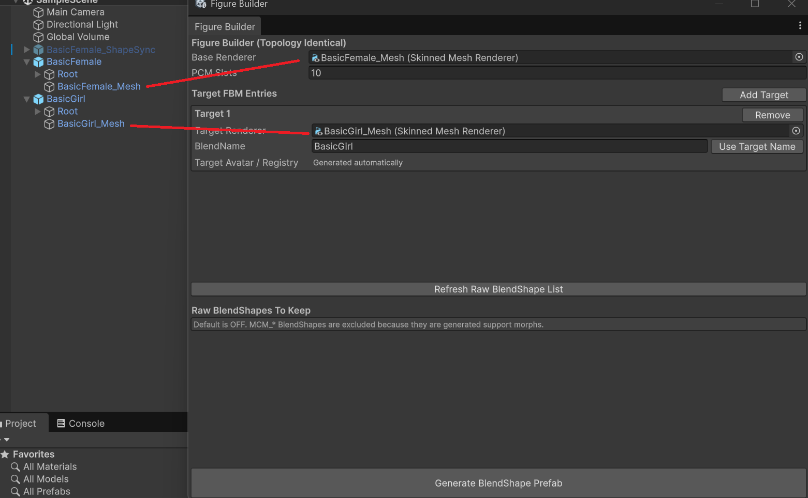
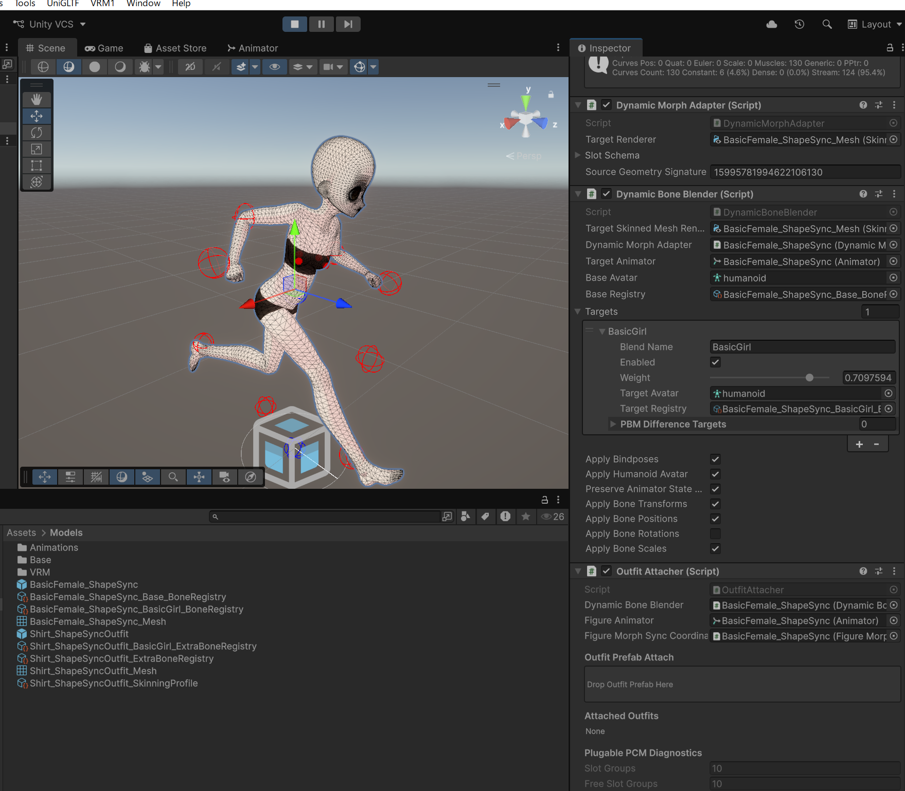
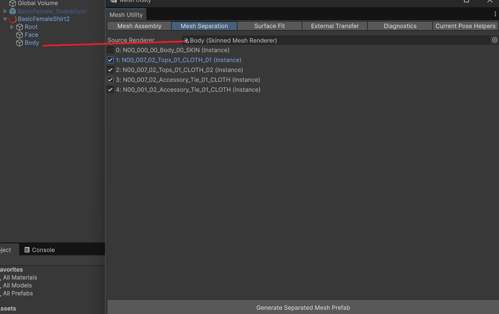
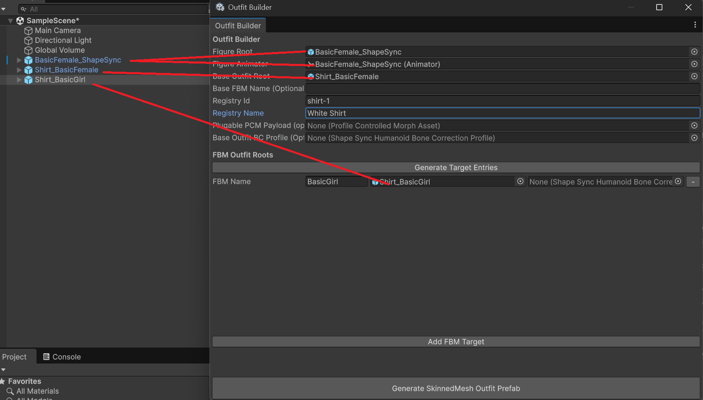

ShapeSync チュートリアルガイド (tutorial.html)
本ガイドは、Unity 向け 3D アバター着せ替え・体型変形ミドルウェア ShapeSync を使用して、アバターの素体化 (Figure) およびリアルタイム体型変形 (Full Body Morph: FBM) を導入・制御する手順を解説する Getting Started チュートリアルドキュメントです。
1. はじめに
1.1 ShapeSync の概要
ShapeSync は、Unity 上で 3D アバターの衣装着せ替えと動的な体型変更を高度に制御するためのミドルウェアです。
UniVRM 等の外部ライブラリに依存せず、Core Package 単体で Figure Builder や Mesh Utility、DynamicBoneBlender による Figure 化および FBM 機能が独立して動作します。
- 対象環境: Unity 6.0 LTS 以上（基本レンダリング環境: Universal Render Pipeline / URP）
- Core Package:
net.zgock-lab.shapesync（UniVRM なしで単独動作可能） - VRM Companion:
net.zgock-lab.shapesync.vrm（ShapeSync VRM サポートオプション）
1.2 コア概念
ShapeSync を理解するための基本概念です。
| 概念 | 説明 |
|---|---|
| Figure (フィギュア) | 着せ替えや体型変形の土台となるキャラクター素体 Prefab です。ベースとなる SkinnedMeshRenderer やボーン構造、変形定義を保持します。 |
| Outfit (アウトフィット) | Figure に着用させる衣装、髪型、アクセサリーなどの各種アセットです。Figure の体型変化に連動して形状やボーンが自動変形します。 |
| FBM (Full Body Morph) | Mesh の BlendShape、Bindpose（バインドポーズ）、Humanoid Avatar を統合制御し、メッシュだけでなくボーンスケールや位置を含めてキャラクターの体型全体を動的に変形・調整するシステムです。 |
2. Quick Start (サンプルシーンの実行)
まずはプロジェクトに同梱されているサンプルシーンを起動し、ShapeSync によるリアルタイム体型変形 (FBM) と衣装のアタッチ / デタッチ動作を体験してみましょう。
ステップ 1: サンプルシーンを開く
- Unity エディタの Project フォルダから
Assets/Scenes/SampleScene.unityをダブルクリックして開きます。
ステップ 2: シーン構成を確認する
Hierarchy ウィンドウで [BasicFemale_ShapeSync] を選択し、Inspector ウィンドウを確認します。
[BasicFemale_ShapeSync] の GameObject には、ShapeSync の基幹となる 2 つの Runtime コンポーネントがアタッチされています。
DynamicBoneBlender: FBM の Weight 変形、ボーンスケール、バインドポーズ調整を一元管理するコンポーネント。OutfitAttacher: 衣装 (Outfit) のアタッチ・デタッチ、および Figure の FBM Weight 変化を Outfit へ同期制御するコンポーネント。

ステップ 3: プレイモードの開始と FBM (体型変形) のテスト
- Unity エディタ上部の Play ボタン (再生ボタン) を押して Play モードに入ります。
- Hierarchy で
[BasicFemale_ShapeSync]を選択します。 - Inspector の
DynamicBoneBlenderコンポーネント内にある Morph / Target Weight スライダーを動かします。 - キャラクターのメッシュとボーン構造がリアルタイムかつ自然に変形することを確認してください。
ステップ 4: 衣装 (Outfit) の着せ替えとデタッチのテスト
- Play モードのまま、Project ウィンドウの
Assets/Models/フォルダ内にあるShirt_ShapeSyncOutfit.prefabを探します。 - Inspector ウィンドウの
OutfitAttacherコンポーネント内にある 「Drop Outfit Prefab Here」 と書かれたエリア内にShirt_ShapeSyncOutfit.prefabをドラッグ＆ドロップします。 - キャラクターにシャツが着用され、
DynamicBoneBlenderの FBM 変形に合わせてシャツも追従・変形することを確認します。 - 着用中の衣装は
OutfitAttacherの Attached Outfits リストに追加されます。リスト内の衣装項目の横にある 「Delete (Detach)」 ボタンをクリックするとデタッチされます。
3. 実践ガイド 1: Figure アセットの作成
自身の 3D アバターモデルから ShapeSync 対応の Figure アセットを作成し、歩行アニメーション中に FBM をリアルタイム適用する標準ワークフローを解説します。
このチュートリアルでは VRoid Studio 出力の .vrm を Unity の入力 Prefab として使うため、対応する UniVRM を事前に導入します。UniVRM は VRM の import にのみ用い、Mesh Utility / Figure Builder / FBM の ShapeSync Core ワークフロー自体は SHAPESYNC_USE_UNIVRM を必要としません。
事前準備（アバターとアニメーションの用意）
- ベース素体 (Base):
Assets/Models/VRM/BasicFemale.vrm- FBM ターゲット (Target):
Assets/Models/VRM/BasicGirl.vrm（Base とトポロジーが同一で体型が異なるアバター）- 歩行アニメーション: Quaternius 氏作 Universal Animation Library (CC0) 等の Humanoid 対応アニメーションクリップ。
※ 入力モデルとして使用するアバターデータのライセンス（CC0 等）は各自で事前にご確認ください。
ステップ 1: Mesh Utility によるメッシュ結合 (Preprocess)
体パーツ（Body, Face, Hair 等）が複数の SkinnedMeshRenderer に分かれているアバターは、事前処理として Mesh Utility を用いて 1 つのメッシュに結合します。
- メニューバーから
Tools > zgock > ShapeSync > Mesh Utilityを開きます。 - ウィンドウ上部の
Mesh Assemblyタブを選択します。 - Root Object フィールドに
Assets/Models/VRM/BasicFemale.vrmをドラッグ＆ドロップします。 - 「Collect Skinned Mesh Renderers From Root」 ボタンをクリックし、分解されているメッシュをリストに収集します。
- 「Generate Merged Prefab」 ボタンを押して、結合済みの素体 Prefab を出力します（
Assets/Models/Base/内などに保存）。 - 同様に、FBM ターゲットアバター
Assets/Models/VRM/BasicGirl.vrmについても Mesh Assembly を実行し、結合済み Prefab を作成します。

ステップ 2: Figure Builder による Figure Prefab の生成
結合されたメッシュデータから ShapeSync の Figure アセットを構築します。
- メニューバーから
Tools > zgock > ShapeSync > Figure Builderを開きます。 - Base Renderer にステップ 1 で結合した
BasicFemaleのSkinnedMeshRendererを設定します。 - Target FBM Entries セクションの 「Add Target」 ボタンをクリックします。
- 追加された Target 項目に、FBM ターゲット (
BasicGirl) のSkinnedMeshRendererを割り当て、BlendName にBasicGirlと入力します。 - 「Generate BlendShape Prefab」 ボタンをクリックします。
- 必要な FBM BlendShape、
CharacterBoneRegistry、および Runtime コンポーネント (DynamicBoneBlender,OutfitAttacher) が自動設定された Figure Prefab（Assets/Models/内）が生成されます。

ステップ 3: シーン配置・アニメーション適用と動作確認
- 生成された Figure Prefab をシーンに配置します。
- Figure の
Animatorコンポーネントに Animator Controller を割り当て、歩行アニメーションクリップを設定します。 - Play モードを開始します。
- キャラクターが歩行動作を行っている状態で、Inspector 上の
DynamicBoneBlenderのBasicGirlWeight スライダーを変更します。 - 達成条件: 歩行アニメーションの動作を崩すことなく、キャラクターの体型（メッシュおよびボーン）が安定して変化することを確認します。

4. 実践ガイド 2: Outfit アセットの作成
服を着たアバターモデルから衣装部分のみを抽出分離し、Figure の FBM（体型変化）に同期して自動変形する ShapeSync 対応の Outfit アセットを生成します。
ステップ 1: Mesh Utility (Separator) による衣装メッシュの分離抽出 (Preprocess)
服を着たアバターモデルから衣装のみを抽出・独立した Prefab として切り出します。
- メニューバーから
Tools > zgock > ShapeSync > Mesh Utilityを開きます。 - ウィンドウ上部の
Mesh Separationタブを選択します。 - Source Renderer に、服を着用したアバターモデルの
SkinnedMeshRendererを設定します。 - 下部に表示されるマテリアルリストから、衣装に対応する Material slot を選択してチェックを入れます（※本チュートリアル用教材モデルでは
*_CLOTH_*という名称が含まれるマテリアルが該当します。複数存在する場合は該当するすべてを選択します）。 - 「Generate Separated Mesh Prefab」 ボタンをクリックし、衣装部分のみが切り出された Base Outfit Prefab を出力します。
- 同様に、FBM ターゲット体型用の衣装モデルについても Mesh Separation を行い、ターゲット用の衣装 Prefab を作成します。

ステップ 2: Outfit Builder の起動と参照指定
- メニューバーから
Tools > zgock > ShapeSync > Outfit Builderを開きます。 - Figure Root: 実践ガイド 1 で作成した Figure Prefab のルート GameObject を指定します。
- Figure Animator: Figure の
Animatorコンポーネントを指定します。 - Base Outfit Root: ステップ 1 で分離抽出した Base Outfit Prefab のルート GameObject を指定します。
- Registry Id: 服の ID（システム上でユニークであること。例:
shirt-1）を入力します。 - Registry Name: わかりやすい名前（例:
White Shirt）を入力します。
ステップ 3: FBM Target の追加とビルド
- FBM Outfit Roots セクションで 「Add FBM Target」 ボタンをクリックします。
- Figure 側の FBM 名（
BasicGirl）を入力し、ステップ 1 で分離抽出したターゲット用の衣装 Prefab を割り当てます。 - ウィンドウ下部の 「Generate Skinned Mesh Outfit Prefab」 ボタンをクリックし、ShapeSync 対応の Outfit Prefab（例:
Shirt_ShapeSyncOutfit.prefab）を出力します。

5. 実践ガイド 3: スクリプトからの制御 (Runtime API)
C# スクリプトを用いて、ゲームプレイ中に動的に FBM Weight の変更や衣装のアタッチ (TryAttach) / デタッチ (Detach) を行う安全な実装例です。
using UnityEngine;
using zgock.ShapeSync;
/// <summary>
/// ShapeSync の Runtime API (OutfitAttacher / DynamicBoneBlender) を操作するサンプルスクリプト
/// </summary>
public class ShapeSyncRuntimeController : MonoBehaviour
{
[Header("Target References")]
[SerializeField] private DynamicBoneBlender dynamicBoneBlender;
[SerializeField] private OutfitAttacher outfitAttacher;
[Header("Outfit Prefab to Attach")]
[SerializeField] private ShapeSyncOutfit outfitPrefab; // 例: Shirt_ShapeSyncOutfit Prefab に付与された ShapeSyncOutfit
// アタッチ成功時に保持する Registry ID
private string attachedRegistryId;
private void Start()
{
if (dynamicBoneBlender == null) dynamicBoneBlender = GetComponent<DynamicBoneBlender>();
if (outfitAttacher == null) outfitAttacher = GetComponent<OutfitAttacher>();
}
/// <summary>
/// FBM (体型モーフ) の Weight を変更する
/// </summary>
/// <param name="targetIndex">FBM ターゲットのインデックス</param>
/// <param name="weight">モーフの強さ (0.0f ~ 1.0f)</param>
public void SetBodyMorphWeight(int targetIndex, float weight)
{
if (dynamicBoneBlender == null || dynamicBoneBlender.Targets == null) return;
if (targetIndex >= 0 && targetIndex < dynamicBoneBlender.Targets.Count)
{
// FBM Target の Weight を更新
dynamicBoneBlender.Targets[targetIndex].weight = Mathf.Clamp01(weight);
}
}
/// <summary>
/// 衣装 Prefab を動的にアタッチ (着用) する
/// </summary>
public void AttachOutfit()
{
if (outfitAttacher == null || outfitPrefab == null) return;
// ShapeSyncOutfit コンポーネントを持つ Prefab を指定してアタッチを試行
bool success = outfitAttacher.TryAttach(outfitPrefab);
if (success)
{
// アタッチ成功時、Prefab の RegistryId を保存して確実にデタッチできるようにする
attachedRegistryId = outfitPrefab.RegistryId;
Debug.Log($"Outfit attached successfully. Registry ID: {attachedRegistryId}");
}
else
{
Debug.LogWarning($"Failed to attach outfit: {outfitPrefab.name}");
}
}
/// <summary>
/// アタッチ中の衣装を Registry ID を指定してデタッチ (脱着) する
/// </summary>
public void DetachOutfit()
{
if (outfitAttacher == null || string.IsNullOrEmpty(attachedRegistryId)) return;
// 保存しておいた Registry ID を指定してデタッチを試行
bool success = outfitAttacher.Detach(attachedRegistryId);
if (success)
{
Debug.Log($"Outfit detached successfully. Registry ID: {attachedRegistryId}");
attachedRegistryId = null;
}
else
{
Debug.LogWarning($"Failed to detach outfit. Registry ID: {attachedRegistryId}");
}
}
}6. トラブルシューティング＆前提条件
動作に問題が発生した場合は、以下の前提条件を確認してください。
- Humanoid Avatar の確認:
- ベース素体および FBM ターゲットアバターの Model Import Settings において、Rig タイプが
Humanoidに正しく設定されているか。
- ベース素体および FBM ターゲットアバターの Model Import Settings において、Rig タイプが
- トポロジー（メッシュ構造）の一致:
- Base と Target の頂点数およびメッシュの構造（トポロジー）が一致しているか。構造の異なるメッシュ間ではビルドエラーになります。
- Animator Controller と Animation Clip の割当:
- Play モードでモーションが再生されない場合、
Animatorに有効な Controller および Clip が割り当てられているか。
- Play モードでモーションが再生されない場合、
- FBM 操作対象の確認:
DynamicBoneBlenderコンポーネントがアタッチされている正確な Figure オブジェクトを選択しているか。
7. 次のステップ / 発展的なトピック (Next Steps)
ShapeSync の基礎的な Figure 化と FBM リアルタイム制御をマスターした後は、必要に応じて以下の高度な機能を利用できます。これらについては別冊の発展ガイドを参照してください。
- Bone Correction Profile (BC Profile):
- 特定のボーン構造に対する高度な補正パラメータの設定。
- Profile Controlled Morph (PCM):
- プロファイル制御による複雑な部位別モーフ・ペイロードワークフロー。
- Partial Body Morph (PBM) / 表情ベイク / VRM 連携:
- 部位限定モーフや VRM 特有の Expression 連携機能。
次のステップ: PBM・BC Profile・PCM 等の応用機能を学ぶ
ShapeSync 高度な機能ガイド (advanced.html) へ進む →